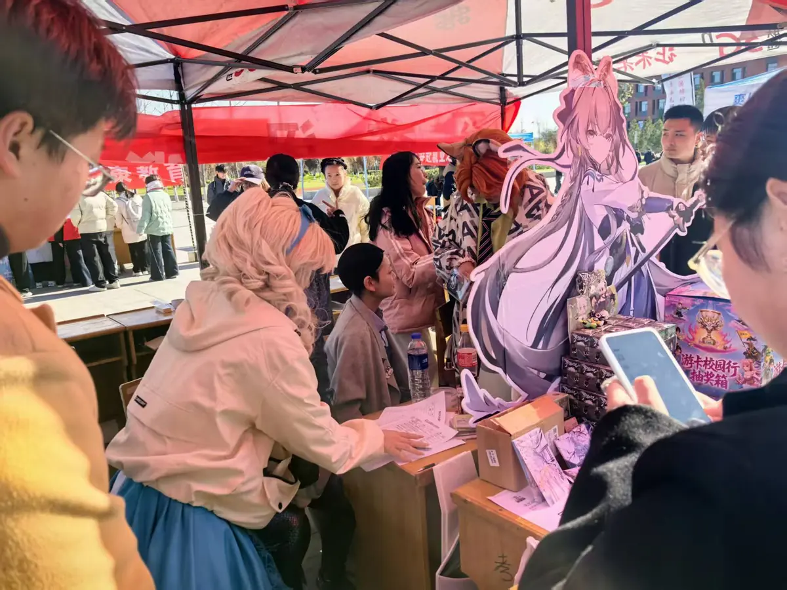

01 / 05 · 2025.04.26
次元跃动 · 青春集结
「这是很多同学第一次在校园里，看到成规模的二次元现场。」

- 时间
- 2025 年 4 月 26 日 8:00—18:00
- 地点
- 学校操场
- 协作
- 心理健康研究教育者协会、电子竞技协会
- 对象
- 全校师生
那天发生了什么
社团第一次把「漫展」这件事整个搬到操场上办。Coser 展示与摄影创作、社团联动游戏与舞台表演、摊位与周边，一天里轮着上；从上午布场到傍晚收摊，操场上一直有人。
三个社团各出一块内容，谁也不只是「挂名协办」——游戏环节由电竞社带、心理协会负责互动问答、我们负责整场调度与视觉，第一次把跨社团协作跑通。
现场怎么运转
- 搭建了一个可复用的二次元文化交流平台，跨社团协作第一次跑通。
- Coser 展示与摄影创作并行，现场产出一批可继续用于宣传的素材。
- 游戏与表演由三个社团联合承担，参与者的集体归属感明显提升。
我们学到的 · 下一次
- 人气超出预期，热门区域一度排起长队——下次提前划出疏散路线与引导标识，高峰时段加派引导同学。
- 联动环节的规则和物资提前统一演练一遍，跨部门沟通留出至少两轮确认。